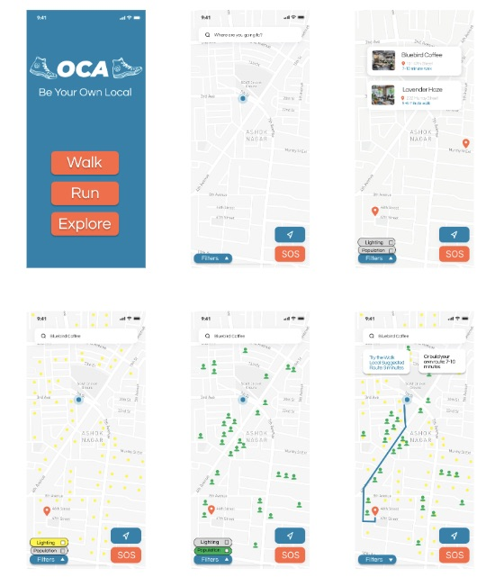
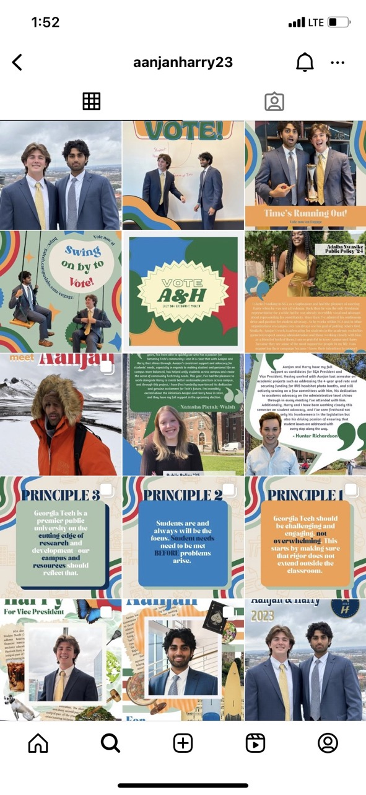

Featured Projects
Here is some of the work that I'm proud of!

App Development for Managing Product, Service, & Technology Development
- Collaborated with a research team to analyze user pain points with current walking safety solutions for women at night.
- Interviewed 28 target audience members to establish user needs to solve walking safety for women.
- Created an integrative interface of 3 city-wide safety features and was awarded “Most Likely Project to Make an Impact.”
Click here to learn more

Campaign Designer for the 2023 Goergia Tech SGA Presidential Campaign
- Launched 15 Instagram posts portraying the SGA President and VP Elect’s values, goals, and accomplishments.
- Digitally constructed 200 stickers to raise reported support via opinion polls from 62% to 74%.
- Scheduled and executed a 2-week social media plan using Meta to optimize campaign funds.
View the Instagram Campaign